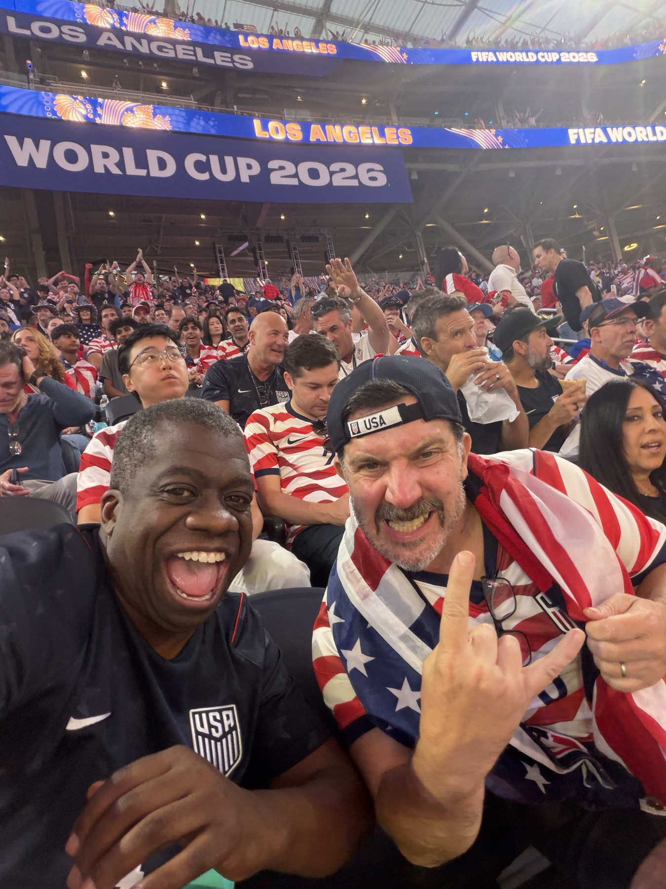
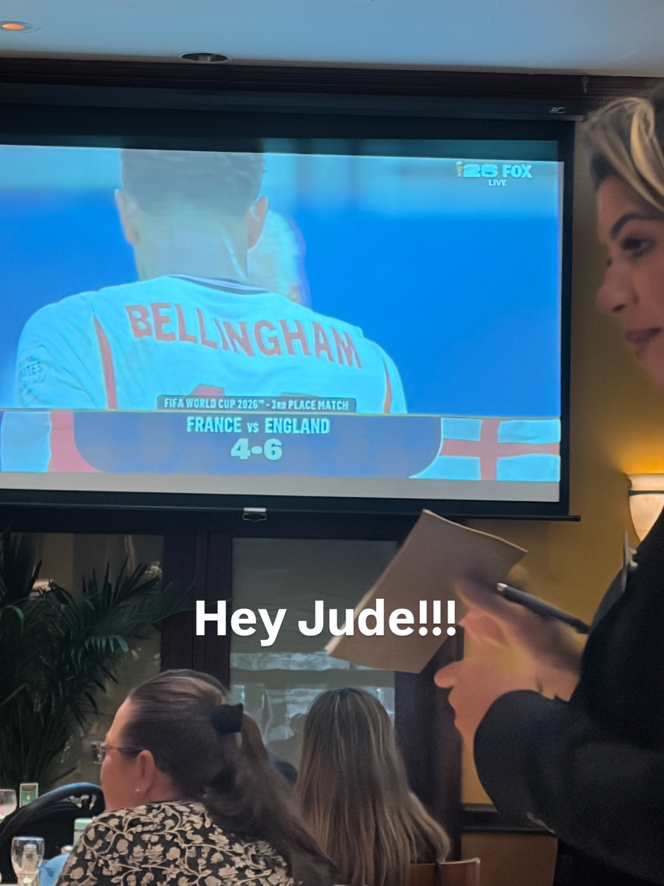
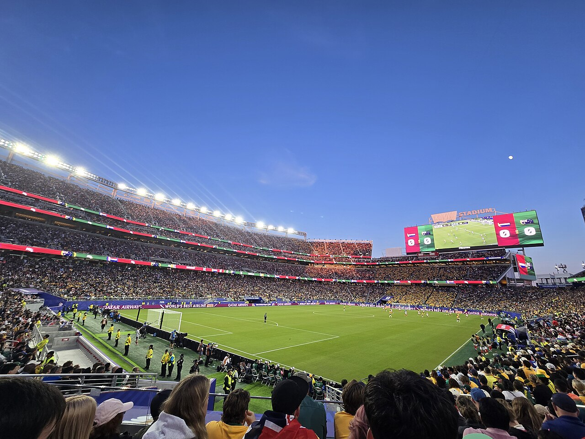

The Run.
Everything on this page happened. The scores are verified, the photos are from our phones, and the texts are quoted with permission from my own thumbs. This is the USA's 2026 World Cup the way we actually lived it: some of us in the stadium, most of us around tables, all of us together.
Read it top to bottom in one sitting. That's how it felt.
G
June 25, 2026. SoFi Stadium. Photo by G, moments after walking in.
USA 4, Paraguay 1. The rout.
Seven minutes in, Pulisic split two defenders, fed McKennie, and the centering touch went in off Bobadilla for an own goal. Balogun added a slick finish at 31' and a rocket into the top corner in first-half stoppage time. The first American to score twice in a World Cup game since 1930. Gio Reyna glided into the box at 90'+8 and toe-flicked his first World Cup goal. A 4-1 that announced the whole summer.
Where we were: Quinn was inside SoFi. His ticket, his night, sixteen years of our shared US Soccer chapters walking into a home World Cup opener. I was at the watch in West Hollywood, exactly as planned, texting Pete a photo of the second Balogun goal at 9:09pm. "heyyyyyy watching the world cup! 3-0 🇺🇸 at halftime."

USA 2, Australia 0. Through with a game to spare.
Pochettino surprised everyone with a 3-5-2, and it worked: Burgess turned a cross into his own net at 11', and Alex Freeman rose for a header at 43'. Pulisic missed it entirely, kicked in the calf at training, and the team didn't blink. 62 percent of the ball and a clean sheet. Knockouts clinched with a match to spare.
Where we were: Mike Morrow was in the building, in his own city, thirty-two years after he and I sat at the 1994 draw in Vegas. His full-time verdict, verbatim: "Scrappy. US deserved the win but they will have trouble getting to 16." He was not wrong, and I love him for it. I watched the noon kick from LA and skipped a party the next day to watch more soccer, which is the most me sentence on this page.

Türkiye 3, USA 2. And it didn't matter.
{kind=link}

The group was already won, so Pochettino rotated nearly everyone: Turner in goal, Reyna and Berhalter starting. Trusty headed us in front off a corner at 3'. Güler answered at 10'. Yılmaz got a knee to Kökçü's shot at 31'. Berhalter leveled at 49'. And with the final touch of the match, at 90'+8, Kaan Ayhan won it for Türkiye. A dead rubber, a wild one, and the seeding unchanged.
Where I was: in the building. Pete Hines transferred me a ticket on June 7 and texted "What time you heading this way to GO TO THE WORLD CUP?!?!" at 1:47pm. I texted six friends the same sentence on the way: "Not me crying in an uber on the way to a soccer game." Fifty years of loving this sport, and I was inside a home World Cup with one of the friends who made the fandom worth having. Quinn drove up from San Diego and was in the building too. The scoreboard says we lost. The scoreboard was not at our seats.

Down to ten men in a knockout. What happens?
We hold. A man down for the last half hour, the line compacted, and then a free kick bent home at 82'. Read on.
USA 2, Bosnia 0. Ten men, one history.
Balogun scored on the stroke of halftime. Then in the 61st minute he went studs-first into Muharemović's ankle and the VAR review sent him off. The first player to score and see red in the same World Cup knockout game since Zidane in the 2006 final. A man down for the last half hour, the team compacted, held, and then Malik Tillman bent a free kick home at 82'. Pulisic afterward: "We had to dig deep for that one."
The first US men's knockout win since 2002. Only the second ever. I watched it from the Dragon House in Stoughton, Wisconsin with the Francksens, in a Norwegian-flagged town that was about to catch soccer fever. Four days later FIFA suspended Balogun's ban on probation, Belgium protested, and the protest was ruled inadmissible hours before the Round of 16. I forwarded that news to about eighty friends in one hour. A friend texted back the tournament's most honest sentence: "open corruption? In our favor? We're finally a real soccer team 🥹"
61 seconds level with Belgium. How does it end?
The whistle hurts. Belgium scored straight off the restart. But those 61 seconds are the reason this page exists.
Belgium 4, USA 1. The whistle.
De Ketelaere finished a Castagne cross in the ninth minute. Tillman answered with another free kick at 31', his second of the tournament, and for 61 seconds we were level and the whole country believed. Belgium scored straight off the restart, added a third when a clearance went wrong at 57', and Lukaku closed it in stoppage time. Pulisic's foot met Tielemans' boot at 52' and he limped off. That was the run.

Where we were: Stoughton, Wisconsin, where I had texted a friend that morning: "I'm here in the Norwegian town of Stoughton, WISCONSIN! where soccer fever has struck in the past 24 hours." Matt Kramer opened the day with "MATCHDAY!!!" and I answered "MATCHDAY". After the whistle a friend wrote "And that's a rap for our World Cup" and I typed the sentence I believe more every day: "Maybe the World Cup was the friends we made along the way." That sentence became a whole page.
For the record, and for the healing: Belgium then took eventual champions Spain to 2-1 in the quarterfinal, closer than anyone else managed. We went out to the team that pushed the champions hardest. And this was still the program's best home-soil World Cup since 1994: a group won, a knockout win, and a young core that will be better in 2030.
The hope ledger.
What we believed in May: this site said we had a real shot at the deepest run since 1930. What the models said: the Opta supercomputer gave us a 42.5 percent chance of reaching the quarterfinals before the knockouts began. What happened: Group D won with 6 points, a ten-man knockout win, a Round of 16 exit to the champions' toughest opponent. Better than 2022. Short of the dream. Both of those are true at once, and if you can't hold both you weren't at the table with us on July 6, where we hurt for about an hour and then started talking about 2030.
The Cup kept going. So did we.
Norway beat Brazil 2-0 in the Round of 16, and Stoughton's flags flew harder. Egypt won its first knockout game ever, on penalties, to earn Salah against Messi. England ended co-host Mexico's run 3-2, then survived Norway in extra time on two Bellingham goals. Spain beat Portugal, then Belgium, then France 2-0 in the semifinal in Texas. Argentina broke England's hearts 2-1 in Atlanta.
The bronze game was a 6-4 England win over France with a Saka hat trick, the highest-scoring World Cup match since 1982, and we watched it over Brazilian churrasco in New York on Foster's 55th birthday, meat sweats and penalty nerves and the crew around one table.
The Final, July 19, MetLife Stadium: Spain 1, Argentina 0. Extra time. Ferran Torres in the 106th minute, 80,663 in the building, Messi's last swing ending one goal short. Spain conceded exactly once the entire tournament. Rodri took the Golden Ball, Mbappé the Golden Boot with ten goals, and the biggest World Cup ever played, 6,810,966 people in the stands, nearly double the record we set in 1994, ended twenty miles from the table where I was sitting with my people.
And here is the receipt I didn't expect to love the most. On the loudest sports day of the year, my phone shows exactly one outgoing message: "what is the venue for Dane's wedding." Six days later I officiated it. The World Cup ended and the life it runs through kept right on going, which is the entire point of this website.

{kind=link}

Where our path ended, where the Cup went.
USA · won Group D → beat Bosnia 2-0 → lost to Belgium 1-4
Belgium · beat us → lost to Spain 2-1 in the quarterfinal, closer than anyone
Spain · beat Portugal 1-0 → Belgium 2-1 → France 2-0 → Argentina 1-0 in the Final, and lifted the Cup at MetLife
So the chain from our whistle to the trophy was two matches long. We were nearer the top of this thing than the scoreboard felt like admitting.
The people who lived it with me have their own page.
Every match above had a room, and every room had people. That's the real story.
The friends we made along the way →